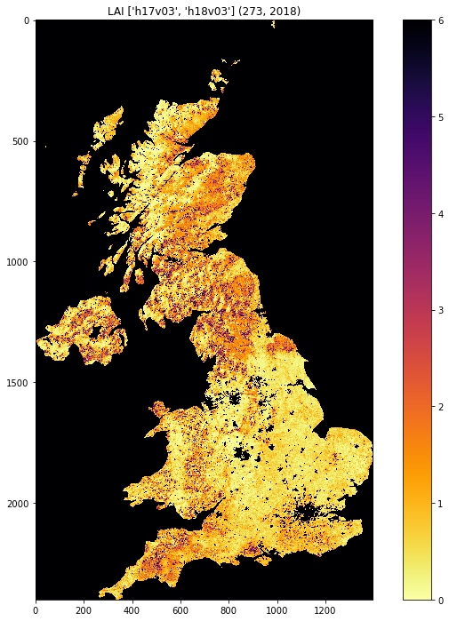

3.2 Accessing MODIS Data products
Table of Contents
3.2.1 Introduction
In this section, you will learn how to:
- scan the directories (on the Earthdata server) where the MODIS data are stored
- get the dataset filename for a given tile, date and product
- get to URL associated with the dataset
- use the URL to pull the dataset over to store in the local file system
You should already know:
- basic use of Python (sections 1 and 2)
- the MODIS product grid system
-
the two tiles needed to cover the UK
tiles = ['h17v03', 'h18v03'] -
what LAI is and the code for the MODIS LAI/FPAR product MOD15
- your username and password for NASA Earthdata, or have previously entered this with
cylog.
Let's first just test your NASA login:
import geog0111.nasa_requests as nasa_requests
from geog0111.cylog import cylog
url = 'https://e4ftl01.cr.usgs.gov/MOTA/MCD15A3H.006/2018.09.30/'
# grab the HTML information
try:
html = nasa_requests.get(url).text
# test a few lines of the html
if html[:20] == '<!DOCTYPE HTML PUBLI':
print('this seems to be ok ... ')
print('use cylog().login() anywhere you need to specify the tuple (username,password)')
except:
print('login error ... try entering your username password again')
print('then re-run this cell until it works')
cylog(init=True)
this seems to be ok ...
use cylog().login() anywhere you need to specify the tuple (username,password)
We use the local class geog0111.nrequests here, in place of the usual requests as this lets the user avoid exposure to some of the tricky bits of getting data from the NASA server.
3.2.2 Accessing NASA MODIS URLs
Although you can access MODIS datasets through the NASA Earthdata interface, there are many occasions that we would want to just automatically pull datasets. This is particularly true when you want a time series of data that might involve many files. For example, for analysing LAI or other variables over space/time) we will want to write code that pulls the time series of data.
This is also something you will need to do the your assessed practical.
If the data we want to use are accessible to us as a URL, we can simply use requests as in previous exercises.
Sometimes, we will be able to specify the parameters of the dataset we want, e.g. using JSON. At othertimes (as in the case here) we might need to do a little work ourselves to construct the particular URL we want.
If you visit the site https://e4ftl01.cr.usgs.gov/MOTA/MCD15A3H.006, you will see 'date' style links (e.g. 2018.09.30) through to sub-directories.
In these, e.g. https://e4ftl01.cr.usgs.gov/MOTA/MCD15A3H.006/2018.09.30/ you will find URLs of a set of files.
The files pointed to by the URLs are the MODIS MOD15 4-day composite 500 m LAI/FPAR product MCD15A3H.
There are links to several datasets on the page, including 'quicklook files' that are jpeg format images of the datasets, e.g.:

as well as xml files and hdf datasets.
3.2.2.1 datetime
The URL we have used above, https://e4ftl01.cr.usgs.gov/MOTA/MCD15A3H.006/2018.09.30/ starts with a call to the server directory MOTA, so we can think of https://e4ftl01.cr.usgs.gov/MOTA asd the base level URL.
The rest of the directoy information MCD15A3H.006/2018.09.30 tells us:
- the product name
MCD15A3H - the product version
006 - the date of the dataset
2018.09.30
There are several ways we could specify the date information. The most 'human readable' is probably YYYY.MM.DD as given here.
Sometimes we will want to refer to it by 'day of year' (doy) (sometimes mistakenly referred to as Julian day) for a particular year. Day of year will be an integer that goes from 1 to 365 or 366 (inclusive).
We can use the Python datetime to do this:
import datetime
year = 2018
for doy in [1,60,365,366]: # set it up as Jan 1st, plus doy - 1 d = datetime.datetime(year,1,1) + datetime.timedelta(doy-1)
# note the careful formatting to include zeros in datestr
datestr = f'{d.year:4d}.{d.month:02d}.{d.day:02d}'
print(f'doy {doy:3d} in {year} is {datestr}')
Exercise 3.2.1
- copy the above code, and change the year to a leap year to see if it works as expected
- write some code that loops over each day in the year and converts from
doyto the format ofdatestrabove. - modify the code so that it forms the full directory URL for the MODIS dataset, e.g.
https://e4ftl01.cr.usgs.gov/MOTA/MCD15A3H.006/2018.09.30/for eachdoy - use what you have learned to write a function called
get_url(), which you give the year and day of year and which returns the full URL. It should use keywords to defineproduct,versionandbase_url. - For homework, tidy up your function, making sure you document it properly. Think aboiut what might happen if you enter incorrect information.
Hint:
-
number of days in year
ndays_in_year = (datetime.datetime(year,12,31) - datetime.datetime(year,1,1)).days + 1
Remember that doy goes from 1 to 365 or 366 (inclusive).
datestrformat
We use datestr = f'{d.year:4d}.{d.month:02d}.{d.day:02d}' as the date string format. The elements such as {d.year:4d} mean that d.year is interpreted as an integer (d) of length 4. When we put a 0 in front, such as in 02d the resultant string is 'padded' with 0. Try something like:
value = 10
print(f'{value:X10f}')
- some bigger hints ...
To get the full URL, you will probably want to define something along the lines of:
url = f'{base_url}/{product}.{version:03d}/{datestr}'
assuming version is an integer.
# do exercise here
3.2.2.2 html
When we access this 'listing' (directory links such as https://e4ftl01.cr.usgs.gov/MOTA/MCD15A3H.006/2018.09.30/) from Python, we will obtain the information in HTML. We don't expect you to know this language in any great depth, but knowing some of the basics is oftem useful.
import geog0111.nasa_requests as nasa_requests
from geog0111.get_url import get_url
import datetime
doy,year = 273,2018
# use your get_url function
# or the one supplied in geog0111
url = get_url(doy,year).url
print(url)
# pull the html
html = nasa_requests.get(url).text
# print a few lines of the html
print(html[:951])
# etc
print('\n','-'*30,'etc','-'*30)
# at the end
print(html[-964:])
https://e4ftl01.cr.usgs.gov/MOTA/MCD15A3H.006/2018.09.30
<!DOCTYPE HTML PUBLIC "-//W3C//DTD HTML 3.2 Final//EN">
<html>
<head>
<title>Index of /MOTA/MCD15A3H.006/2018.09.30</title>
</head>
<body>
<script src="https://status.earthdata.nasa.gov/assets/banner_widget.js"></script>
<!-- Add the Status banner -->
<div id="earthdata-notification-banner"></div>
<!-- End Status banner -->
<pre>
********************************************************************************
U.S. GOVERNMENT COMPUTER
This is the NASA Land Processes Distributed Active Archive Center (LP DAAC)
Distribution Server hosted at the USGS Earth Resources Observation and Science
(EROS) Center. The purpose of this server is to provide NASA data products to
the public. The directory listing is exposed intentionally for user navigation
to the NASA data products. Large data downloads (not jpeg browse) requires
user authentication through the NASA Earthdata Login. To obtain a NASA Earthdata
Logi
------------------------------ etc ------------------------------
<img src="/icons/unknown.gif" alt="[ ]"> <a href="MCD15A3H.A2018273.h35v08.006.2018278143649.hdf.xml">MCD15A3H.A2018273.h35v08.006.2018278143649.hdf.xml</a> 2018-10-05 09:42 7.6K
<img src="/icons/unknown.gif" alt="[ ]"> <a href="MCD15A3H.A2018273.h35v09.006.2018278143649.hdf">MCD15A3H.A2018273.h35v09.006.2018278143649.hdf</a> 2018-10-05 09:42 207K
<img src="/icons/unknown.gif" alt="[ ]"> <a href="MCD15A3H.A2018273.h35v09.006.2018278143649.hdf.xml">MCD15A3H.A2018273.h35v09.006.2018278143649.hdf.xml</a> 2018-10-05 09:42 7.6K
<img src="/icons/unknown.gif" alt="[ ]"> <a href="MCD15A3H.A2018273.h35v10.006.2018278143650.hdf">MCD15A3H.A2018273.h35v10.006.2018278143650.hdf</a> 2018-10-05 09:42 298K
<img src="/icons/unknown.gif" alt="[ ]"> <a href="MCD15A3H.A2018273.h35v10.006.2018278143650.hdf.xml">MCD15A3H.A2018273.h35v10.006.2018278143650.hdf.xml</a> 2018-10-05 09:42 7.6K
<hr></pre>
</body></html>
In HTML the code text such as:
<a href="MCD15A3H.A2018273.h35v10.006.2018278143650.hdf">MCD15A3H.A2018273.h35v10.006.2018278143650.hdf</a>
specifies an HTML link, that will appear as
MCD15A3H.A2018273.h35v10.006.2018278143650.hdf 2018-10-05 09:42 7.6K
and link to the URL specified in the href field: MCD15A3H.A2018273.h35v10.006.2018278143650.hdf.
We could interpret this information by searching for strings etc., but the package BeautifulSoup can help us a lot in this.
import geog0111.nasa_requests as nasa_requests
from geog0111.get_url import get_url
from bs4 import BeautifulSoup
doy,year = 273,2018
url = get_url(doy,year).url
html = nasa_requests.get(url).text
# use BeautifulSoup
# to get all urls referenced with
# html code <a href="some_url">
soup = BeautifulSoup(html,'lxml')
links = [mylink.attrs['href'] for mylink in soup.find_all('a')]
Exercise E3.2.2
- copy the code in the block above and print out some of the linformation in the list
links(e.g. the last 20 entries) - using an implicit loop, make a list called
hdf_filenamesof only those filenames (links) that havehdfas their filename extension.
Hint 1: first you might select an example item from the links list:
item = links[-1]
print('item is',item)
and print:
item[-3:]
but maybe better (why would this be?) is:
item.split('.')[-1]
Hint 2: An implicit loop is a construct of the form:
[item for item in links]
In an implicit for loop, we can actually add a conditional statement if we like, e.g. try:
hdf_filenames = [item for item in links if item[-5] == '4']
This will print out item if the condition item[-5] == '4' is met. That's a bit of a pointless test, but illustrates the pattern required. Try this now with the condition you want to use to select hdf files.
# do exercise here
3.2.3 MODIS filename format
The hdf filenames are of the form:
MCD15A3H.A2018273.h35v10.006.2018278143650.hdf
where:
- the first field (
MCD15A3H) gives the product code - the second (
A2018273) gives the observation date: day of year273,2018here - the third (
h35v10) gives the 'MODIS tile' code for the data location - the remaining fields specify the product version number (
006) and a code representing the processing date.
If we want a particular dataset, we would assume then that we know the information to construct the first four fields.
We then have the task remaining of finding an address of the pattern:
MCD15A3H.A2018273.h17v03.006.*.hdf
where * represents a wildcard (unknown element of the URL/filename).
Putting together the code from above to get a list of the hdf files:
#from geog0111.nasa_requests import nasa_requests
from bs4 import BeautifulSoup
from geog0111.get_url import get_url
import geog0111.nasa_requests as nasa_requests
doy,year = 273,2018
url = get_url(doy,year).url
html = nasa_requests.get(url).text
soup = BeautifulSoup(html,'lxml')
links = [mylink.attrs['href'] for mylink in soup.find_all('a')]
# get all files that end 'hdf' as in example above
hdf_filenames = [item for item in links if item.split('.')[-1] == 'hdf']
We now want to specify a particular tile or tiles to access.
In this case, we want to look at the field item.split('.')[-4] and check to see if it is the list tiles.
Exercise 3.2.3
- copy the code above and print out the first 10 values in the list
hdf_filenames. Can you recognise where the tile information is in the string?
Now, let's check what we get when we look at item.split('.')[-4].
- set a variable called
tilescontaining the names of the UK tiles (as in Exercise 3.1.1) - write a loop
for item in links:to loop over each item in the listlinks - inside this loop set the condition
if item.split('.')[-1] == 'hdf':to select onlyhdffiles, as above - inside this conditional statement, print out
item.split('.')[-4]to see if it looks like the tile names - having confirmed that you are getting the right information, add another conditional statement to see if
item.split('.')[-4] in tiles, and then print only those filenames that pass both of your tests - see if you can combine the two tests (the two
ifstatements) into a single one
Hint 1: if you print all of the tilenames, this will go on for quite some time. Instead it may be better to use print(item.split('.')[-4],end=' '), which will put a space, rather than a newline between each item printed.
Hint 2: recall what the logical statement (A and B) gives when thinking about the combined if statement
# do exercise here
You should end up with something like:
import geog0111.nasa_requests as nasa_requests
from bs4 import BeautifulSoup
from geog0111.get_url import get_url
doy,year = 273,2018
tiles = ['h17v03', 'h18v03']
url = get_url(doy,year).url
html = nasa_requests.get(url).text
soup = BeautifulSoup(html,'lxml')
links = [mylink.attrs['href'] for mylink in soup.find_all('a')]
tile_filenames = [item for item in links \
if (item.split('.')[-1] == 'hdf') and \
(item.split('.')[-4] in tiles)]
Exercise E3.2.4
- print out the first 10 items in
tile_filenamesand check the result is as you expect. - write a function called
modis_tiles()that takes as inputdoy,yearandtilesand returns a list of the modis tile urls.
Hint
-
Don't forget to put in a mechanism to allow you to change the default
base_url,productandversion(as you did for the functionget_url()) -
In some circumstances, yopu can get repeats of filenames in the list. One way to get around this is to convert the list to a
numpyarray, and usenp.unique()to remove duplicates.import numpy as np tile_filenames = np.unique(tile_filenames)
# do exercise here
You should end up with something like:
from geog0111.modis_tiles import modis_tiles
doy,year = 273,2018
tiles = ['h17v03', 'h18v03']
tile_urls = modis_tiles(doy,year,tiles)
Exercise E3.2.5
- print out the first 10 items in
tile_urlsand check the result is as you expect.
# do exercise here
3.2.4 Saving binary data to a file
We suppose that we want to save the dataset to a local file on the system.
To do that, we need to know how to save a binary dataset to a file. To do this well, we should also consider factors such as whether we want to save a file we already have.
Before we go any further we should check:
- that the directory exists (if not, create it)
- that the file doesn't already exist (else, don't bother)
We can conveniently use methods in pathlib.Path for this.
So, import Path:
from pathlib import Path
We suppose we might want to put a file (variable filename) into the directory destination_folder:
To test if a directory exists and create if not:
dest_path = Path(destination_folder)
if not dest_path.exists():
dest_path.mkdir()
To make a compound name of dest_path and filename:
output_fname = dest_path.joinpath(filename)
To test if a file exists:
if not output_fname.exists():
print(f"{str(output_fname))} doesn't exist yet ..."})
Exercise E3.2.6
- set a variable
destination_foldertodataand write code to create this folder ('directory') if it doesn't already exist. - set a variable
filenametotest.binand write code to check to see if this file is in the folderdestination_folder. If not, print a message to say so.
# do exercise here
We now try to read the binary file data/test_image.bin.
This involves opening a binary file for reading:
fp = open(input_fname, 'rb')
Then reading the data:
data = fp.read()
Then close fp
fp.close()
input_fname = 'data/test_image.bin'
fp = open(input_fname, 'rb')
data = fp.read()
fp.close()
print(f'data read is {len(data)} bytes')
data read is 9136806 bytes
And now, write the data as data/test.bin.
This involves opening a binary file for writing:
fp = open(output_fname, 'wb')
Then reading the data:
d = fp.write(data)
and closing as before:
fp.close()
output_fname = 'data/test.bin'
fp = open(output_fname, 'wb')
d = fp.write(data)
print(f'data written is {d} bytes')
data written is 9136806 bytes
We can avoid the need for the close by using the construct:
with open(output_fname, 'wb') as fp:
d = fp.write(data)
d = 0
with open(output_fname, 'wb') as fp:
d = fp.write(data)
print(f'data written is {d} bytes')
data written is 9136806 bytes
Exercise E3.2.7
With the ideas above, write some code to:
- check to see if the output directory
dataexists - if not, create it
- check to see if the input file
data/test_image.binexists - if so, read it in to
data - check to see if the output file
data/test.binexists - if not (and if you read data), save
datato this file - once you are happy with the code operation, write a function:
save_data(data,filename,destination_folder)that takes the binary datasetdataand writes it to the filefilenamein directorydestination_folder. It should return the n umber of bytes written, and should check to see if files / directories exist and act accordingly. - add a keyword option to
save_data()that will overwrite the filename, even if it already exists.
# do exercise here
You should now know how to save a binary data file.
3.2.4 downloading the data file
The following code uses the nasa_requests library to pull some binary data from a URL.
The response is tested (r.ok), and if it is ok, then we split the url to derive the filename, and print this out.
The binary dataset is available as r.content, which we store to the variable data here:
import geog0111.nasa_requests as nasa_requests
from geog0111.modis_tiles import modis_tiles
from pathlib import Path
doy,year = 273,2018
tiles = ['h17v03', 'h18v03']
destination_folder = 'data'
tile_urls = modis_tiles(doy,year,tiles)
# loop over urls
for url in tile_urls:
r = nasa_requests.get(url)
# check response
if r.ok:
# get the filename from the url
filename = url.split('/')[-1]
# get the binary data
data = r.content
print(filename)
else:
print (f'response from {url} not good')
response from https://e4ftl01.cr.usgs.gov/MOTA/MCD15A3H.006/2018.09.30/MCD15A3H.A2018273.h17v03.006.2018278143630.hdf not good
response from https://e4ftl01.cr.usgs.gov/MOTA/MCD15A3H.006/2018.09.30/MCD15A3H.A2018273.h18v03.006.2018278143633.hdf not good
Exercise E3.2.8
- use the code above to write a function
get_modis_files()that takes as inputdoy,yearandtiles, has a defaultdestination_folderofdata, that downloads the appropriate datasets (if they don't already exist). It should have similar defaults tomodis_tiles(). It should return a list of the output filenames.
# do exercise here
You should end up with something like:
import geog0111.nasa_requests as nasa_requests
from geog0111.save_data import save_data
doy,year = 273,2018
tiles = ['h17v03', 'h18v03']
destination_folder = 'data'
tile_urls = modis_tiles(doy,year,tiles)
# loop over urls
for url in tile_urls:
r = nasa_requests.get(url)
# check response
if r.ok:
# get the filename from the url
filename = url.split('/')[-1]
# get the binary data
d = save_data(r.content,filename,destination_folder)
print(filename,d)
else:
print (f'response from {url} not good')
response from https://e4ftl01.cr.usgs.gov/MOTA/MCD15A3H.006/2018.09.30/MCD15A3H.A2018273.h17v03.006.2018278143630.hdf not good
response from https://e4ftl01.cr.usgs.gov/MOTA/MCD15A3H.006/2018.09.30/MCD15A3H.A2018273.h18v03.006.2018278143633.hdf not good
3.2.5 Visualisation
We will learn more fully how to visualise these later, but just to show that the datasets exist.
You might want to look at the FIPS country codes for selecting boundary data.
import requests
import shutil
'''
Get the world borders shapefile that we will need
'''
tm_borders_url = "http://thematicmapping.org/downloads/TM_WORLD_BORDERS-0.3.zip"
r = requests.get(tm_borders_url)
with open("data/TM_WORLD_BORDERS-0.3.zip", 'wb') as fp:
fp.write (r.content)
shutil.unpack_archive("data/TM_WORLD_BORDERS-0.3.zip",
extract_dir="data/")
---------------------------------------------------------------------------
ReadError Traceback (most recent call last)
<ipython-input-20-6e327a94488d> in <module>
11
12 shutil.unpack_archive("data/TM_WORLD_BORDERS-0.3.zip",
---> 13 extract_dir="data/")
~/anaconda3/envs/geog0111/lib/python3.7/shutil.py in unpack_archive(filename, extract_dir, format)
1000 func = _UNPACK_FORMATS[format][1]
1001 kwargs = dict(_UNPACK_FORMATS[format][2])
-> 1002 func(filename, extract_dir, **kwargs)
1003
1004
~/anaconda3/envs/geog0111/lib/python3.7/shutil.py in _unpack_zipfile(filename, extract_dir)
897
898 if not zipfile.is_zipfile(filename):
--> 899 raise ReadError("%s is not a zip file" % filename)
900
901 zip = zipfile.ZipFile(filename)
ReadError: data/TM_WORLD_BORDERS-0.3.zip is not a zip file
from geog0111.get_modis_files import get_modis_files
import gdal
import matplotlib.pylab as plt
import numpy as np
def mosaic_and_mask_data(gdal_fnames, vector_file, vector_where):
stitch_vrt = gdal.BuildVRT("", gdal_fnames)
g = gdal.Warp("", stitch_vrt,
format = 'MEM', dstNodata=200,
cutlineDSName = vector_file,
cutlineWhere = vector_where)
return g
doy,year = 273,2018
tiles = ['h17v03', 'h18v03']
destination_folder = 'data'
filenames = get_modis_files(doy,year,tiles,base_url='https://e4ftl01.cr.usgs.gov/MOTA',\
version=6,\
product='MCD15A3H')
# this part is to access a particular dataset in the file
gdal_fnames = [f'HDF4_EOS:EOS_GRID:"{file_name:s}":MOD_Grid_MCD15A3H:Lai_500m'
for file_name in filenames]
g = mosaic_and_mask_data(gdal_fnames, "data/TM_WORLD_BORDERS-0.3.shp",
"FIPS='UK'")
lai = np.array(g.ReadAsArray()).astype(float) * 0.1 # for LAI scaling
# valid data mask
mask = np.nonzero(lai < 20)
min_y = mask[0].min()
max_y = mask[0].max() + 1
min_x = mask[1].min()
max_x = mask[1].max() + 1
lai = lai[min_y:max_y,
min_x:max_x]
fig = plt.figure(figsize=(12,12))
im = plt.imshow(lai, interpolation="nearest", vmin=0, vmax=6,
cmap=plt.cm.inferno_r)
plt.title('LAI'+' '+str(tiles)+' '+str((doy,year)))
plt.colorbar()
<matplotlib.colorbar.Colorbar at 0x7f9268d39410>

from geog0111.get_modis_files import get_modis_files
import gdal
import matplotlib.pylab as plt
import numpy as np
def mosaic_and_mask_data(gdal_fnames, vector_file, vector_where):
stitch_vrt = gdal.BuildVRT("", gdal_fnames)
g = gdal.Warp("", stitch_vrt,
format = 'MEM', dstNodata=200,
cutlineDSName = vector_file,
cutlineWhere = vector_where)
return g
doy,year = 273,2018
tiles = ['h17v03', 'h18v03']
destination_folder = 'data'
filenames = get_modis_files(doy,year,tiles,base_url='https://e4ftl01.cr.usgs.gov/MOTA',\
version=6,\
product='MCD15A3H')
# this part is to access a particular dataset in the file
gdal_fnames = [f'HDF4_EOS:EOS_GRID:"{file_name:s}":MOD_Grid_MCD15A3H:Lai_500m'
for file_name in filenames]
g = mosaic_and_mask_data(gdal_fnames, "data/TM_WORLD_BORDERS-0.3.shp",
"FIPS='NL'")
lai = np.array(g.ReadAsArray()).astype(float) * 0.1 # for LAI scaling
# valid data mask
mask = np.nonzero(lai < 20)
min_y = mask[0].min()
max_y = mask[0].max() + 1
min_x = mask[1].min()
max_x = mask[1].max() + 1
lai = lai[min_y:max_y,
min_x:max_x]
fig = plt.figure(figsize=(12,12))
im = plt.imshow(lai, interpolation="nearest", vmin=0, vmax=6,
cmap=plt.cm.inferno_r)
plt.title('LAI'+' '+str(tiles)+' '+str((doy,year)))
plt.colorbar()
<matplotlib.colorbar.Colorbar at 0x7f92589d3bd0>

Exercise 3.2.7 Homework
- Have a look at the information for
MOD10A1product, which is the 500 m MODIS daily snow cover product. - Use what you have learned here to download the MOD10A product over the UK
Hint:
* The data are on a different server https://n5eil01u.ecs.nsidc.org/MOST
* the template for the snow cover dataxset is f'HDF4_EOS:EOS_GRID:"{file_name:s}":MOD_Grid_Snow_500m:NDSI_Snow_Cover'
* today-10 may not be the best example doy: choose something in winter
* valid snow cover values are 0 to 100 (use this to set vmin=0, vmax=100 when plotting)
N.B. You will be required to download this dataset for your assessed practical, so it is a good idea to sort code for this now
# do exercise here
3.2.6 Summary
In this session, we have learned how to download MODIS datasets from NASA Earthdata.
We have developed and tested functions that group together the commands we want, ultimately arriving at the function get_modis_files(doy,year,tiles,**kwargs).
We have seen ((if you've done the homework) that such code is re-useable and can directly be used for your assessed practical.